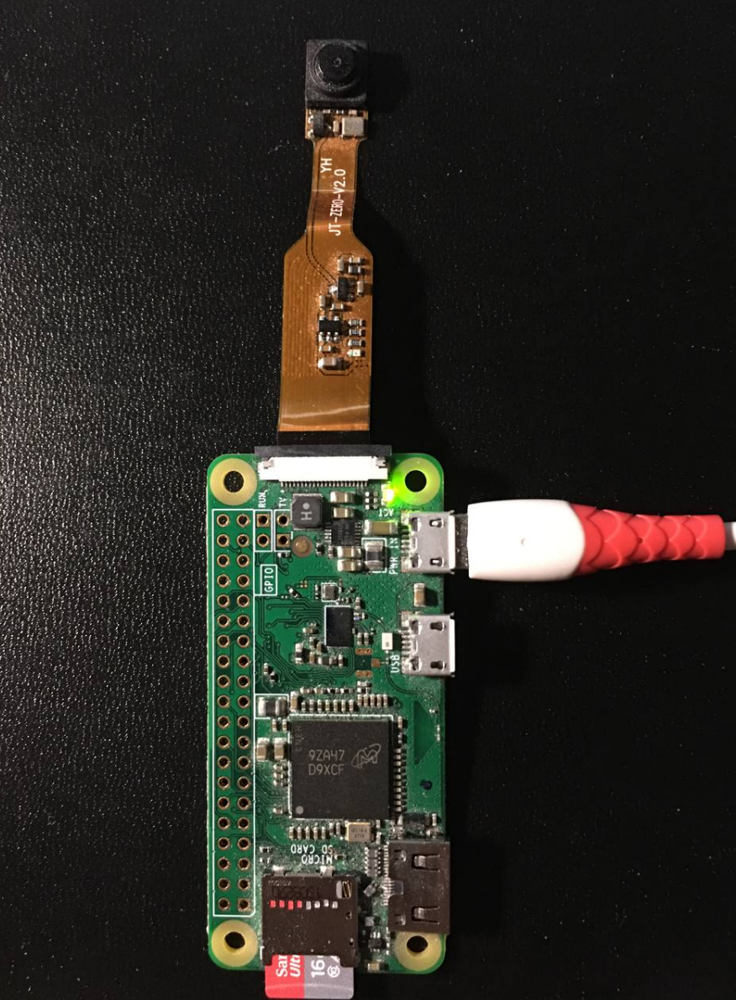
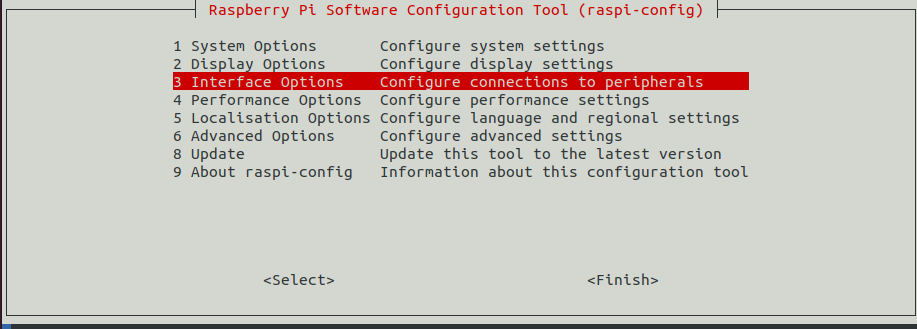
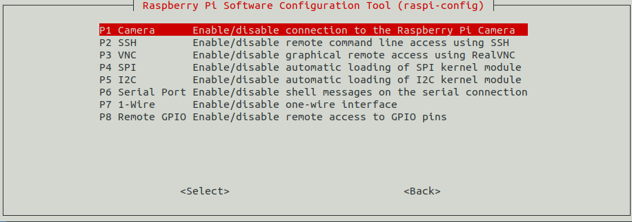
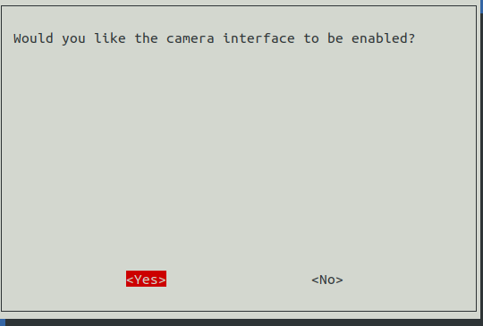
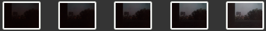
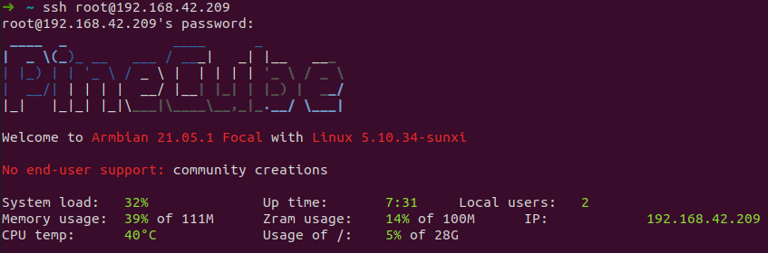
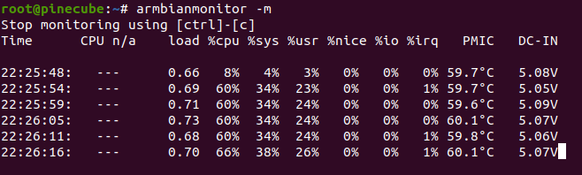
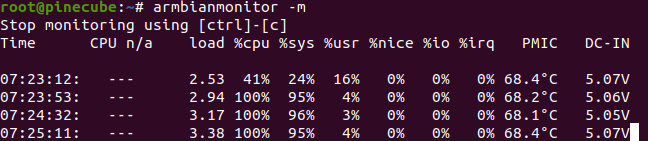

IP Webcam
目标: 拍窗外 365 天的风景做成定格动画.
树莓派
准备
材料: Misco SD 卡, 树莓派 Zero W
首先刷系统, 我以前的文章有详细步骤
第二步, 让树莓派连上 Wifi. 把 SD 卡放入读卡器插入电脑, 进入 SD 卡的 boot 分区, 创建一个空的 ssh 文件.
然后创建 wpa_supplicant.conf, 输入以下配置
country=CN
ctrl_interface=DIR=/var/run/wpa_supplicant GROUP=netdev
update_config=1
network={
ssid="WIFI_SSID"
scan_ssid=1
psk="WIFI_PASSWORD"
key_mgmt=WPA-PSK
}
将 SD 放入树莓派, 接入电源, 用 nmap 192.168.42.0/24 扫描它的地址
安装摄像头
参考官方文档[1]
注意摄像头别装反了, 不然可能把某个部件烧了

需要开启摄像头选项
sudo raspi-config



树莓派会提醒你重启
检查是否可用
pi@raspberrypi:~ $ vcgencmd get_camera
supported=1 detected=1
但出现传感器没数据的问题
pi@raspberrypi:~ $ raspistill -v -o asdf.jpg
"raspistill" Camera App (commit 4a0a19b88b43 Tainted)
Camera Name ov5647
Width 2592, Height 1944, filename asdf.jpg
Using camera 0, sensor mode 0
GPS output Disabled
Quality 85, Raw no
Thumbnail enabled Yes, width 64, height 48, quality 35
Time delay 5000, Timelapse 0
Link to latest frame enabled no
Full resolution preview No
Capture method : Single capture
Preview Yes, Full screen Yes
Preview window 0,0,1024,768
Opacity 255
Sharpness 0, Contrast 0, Brightness 50
Saturation 0, ISO 0, Video Stabilisation No, Exposure compensation 0
Exposure Mode 'auto', AWB Mode 'auto', Image Effect 'none'
Flicker Avoid Mode 'off'
Metering Mode 'average', Colour Effect Enabled No with U = 128, V = 128
Rotation 0, hflip No, vflip No
ROI x 0.000000, y 0.000000, w 1.000000 h 1.000000
Camera component done
Encoder component done
Starting component connection stage
Connecting camera preview port to video render.
Connecting camera stills port to encoder input port
Opening output file asdf.jpg
Enabling encoder output port
Starting capture -1
Camera control callback cmd=0x4f525245mmal: No data received from sensor. Check all connections, including the Sunny one on the camera board
查了网上的帖子, 最靠谱解决方法是重新买一个, 但还是要看人品, 有一定概率失败, 所以我直接放弃树莓派, 把安卓手机拿出来取而代之.
我估计我一开始把它装反了, 导致传感器烧坏
使用摄像头
如果你运行 raspistill 不报错, 那么树莓派的摄像头就这么个用法
安卓
安卓的 Webcam 开源项目极少, 看起来稳定的 spydroid-ipcamera[2] 最后一次更新还是 7,8 年前, 而且用不了.
其次, 安卓开发十分复杂, 这一点马上消除你开发改造的想法.
最后装了 IP Webcam[3], 用 VLC 预览效果如下
用 VLC 把流保存在硬盘里.
缺点: 安卓机的发热量相当大, 太阳直射也很危险
用照相的方式也许可以减少手机发热量
while true; do
wget http://192.168.42.79:8080/photo.jpg -O `date +%Y%m%d%H%M%S`.jpg; sleep 60;
done
结论
树莓派, 安卓机当 Webcam 操作起来都很出乎意料地简单, 我嫌麻烦才把树莓派搁置了好几个月, 事实上树莓派已经有很成熟的应用, 敲一行命令就能推流. 但硬件脆得跟纸一样.
更新:
- 用风扇散热, 用包装袋的锡纸反射阳光, 手机稳定运行了两天. 定格照片效果:

- 买了 PineCute, 后续更新评测.
更新: PineCute
外观见封面图.

我刷的是 Armbian 提供的镜像. 刷机和其他机器一样, 刷完后用 nmap 扫描获取地址, SSH 登录.
按照 PineCube 的 Wiki 完成配置.
PineCube 推送摄像头的几个方法如下:
gstreamer: h264 HLSv4l2rtspserver: h264 RTSP- gstreamer: JPEG RTSP
gstreamer: h264 RTSP- gstreamer: JPEG RTP UDP
- gstreamer: JPEG RTP TCP
- gstreamer and socat: MJPEG HTTP server
- virtual web camera: gstreamer, mjpeg, udp rtp unicast
我选 gstreamer: JPEG RTP UDP, 因为更简单
通过 ad hoc wifi 连接 PineCube 和 另一台主机 A
# A
ip link set wlp6s0 down
iw wlp6s0 set type ibss
ip link set wlp6s0 up
iw dev wlp6s0 ibss join Pisces 2412 key d:1:5chrs
ip addr add 10.2.3.1/24 dev wlp6s0
# PineCube
ip link set wlan down
ip link set wlan0 up
iw wlan0 set type ibss
iw dev wlan0 ibss join Pisces 2412 key d:1:5chrs
ip addr add 10.2.3.3/24 dev wlan0
PineCube 往 A 发送 rtp
gst-launch-1.0 v4l2src ! image/jpeg,width=1920,height=1080 ! rtpjpegpay name=pay0 ! udpsink host=10.2.3.1 port=8000
用 ssh -X 访问 A, 在 A 输入
gst-launch-1.0 udpsrc port=8000 ! application/x-rtp, encoding-name=JPEG,payload=26 ! rtpjpegdepay ! jpegdec ! autovideosink
就会弹出窗口. 这时 CPU 温度达到 60 度

上图是网线通信, 用 wifi 之后达到 68 度

500W 像素太低了. 目前不知道拿它干什么, 先闲置一段时间.